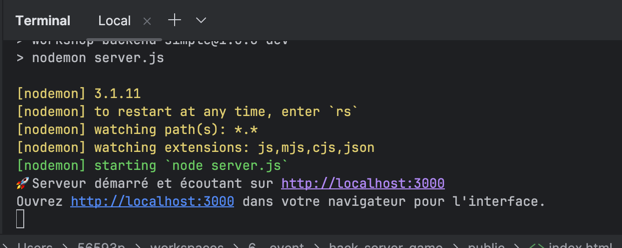

Le but de l'exercice est de modifier le code existant afin d'y ajouter de nouvelles fonctionnalités.
Exercice n°1 : Afficher le mot de passe dans la console
Il est possible d'afficher des informations côté client dans un outil qu'on appelle la console, grâce à des méthodes comme console.log(), console.info(), console.error(), etc.
Pour observer les log de la console d'un serveur on passe par le terminal dans lequel on a lancé ce dernier

> Consigne
Se baser sur le code existant pour afficher dans la console le mot de passe envoyé par le client.
Exercice n°2 : Trouver la méthode permettant de formatter du texte en minuscules
Il existe une multitude de méthodes " prêtes à l'emploi " qui permettent de transformer les données utilisées par l'application.
Voici la documentation officielle de JavaScript
> Consigne
En utilisant la documentation fournie, trouver la méthode qui permet de transformer du texte afin de l'écrire tout en minuscules, puis l'appliquer au nom de l'utilisateur avant qu'il ne soit envoyé vers la base de données pour vérification de concordance.
Exercice n°3 : Ajouter la vérification du mot de passe à l'authentification
Lors de l'authentification par nom et mot de passe, actuellement seul le nom est vérifié.
> Consigne
Se baser sur le code existant pour mettre en place la vérification du mot de passe également.
Exercice n°4 : Ajouter un message d'erreur dans la méthode
Dans la méthode calculerAge(), aucune information n'est retournée par le serveur en cas d'erreur.
> Consigne
Ajouter un message d'erreur permettant d'informer le client de la nature de l'erreur rencontrée.
Exercice n°5 : Supprimer le mot de passe et ajouter l'âge dans les données envoyées au client
Une fois la base de données interrogée et la concordance établie entre le nom et le mot de passe reçus, la base de données renvoie les informations de l'utilisateur vers le client pour les afficher en repassant par l'intermédiaire du serveur : c'est la variable " donneesUtilisateur ".
Pour sécuriser l'application, le mot de passe ne doit pas retourné dans donneesUtilisateur.
Et le client a besoin de l'âge de l'utilisateur afin de pouvoir l'afficher sur le profil.
> Consigne
En se basant sur le code existant et en utilisant la méthode calculerAge, modifier la variable donneesUtilisateur pour qu'elle réponde à ces deux exigences.